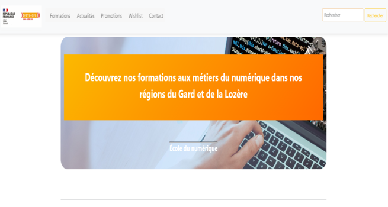

ErhanERUNSAL
DÉVELOPPEUR WEB WEB MOBILE
"Enthousiaste et dévoué à la conception ainsi qu'à l'essor de projets web, j'ai l'honneur d'être titulaire du titre professionnel de niveau 5 en tant que Développeur Web / Web Mobile, attribué par le GRETA de Mende. Mon enthousiasme profond pour ce domaine me pousse à m'investir pleinement et à apprécier chaque moment passé à travailler. Cet intérêt sincère se traduit non seulement par ma passion, mais aussi par l'excellence et la qualité remarquable de mes réalisations."
Également diplômé du BTS NDRC, j'ai eu l'occasion d'acquérir une expérience variée grâce à plusieurs stages durant mes études. Par exemple, en 2023, j'ai travaillé pendant deux mois pour le restaurant Le Cappadoce, où j'ai été chargé de la création du site internet de l'établissement. En 2020, j'ai effectué un stage de deux mois chez Champi-Lozère. Là-bas, j'ai été chargé de la gestion du back-end du site internet de l'entreprise, enrichissant davantage mon expérience en développement web. En 2019, j'ai relevé un autre défi lors de mon stage de deux mois à Point.P Mende. J'y ai effectué le contrôle informatique de l'inventaire des produits en rayon. De plus, j'ai eu l'opportunité de créer un jeu-concours en agence, une initiative visant à fidéliser la clientèle. Enfin, en 2017, j'ai effectué un stage de deux mois à la Société Générale Marvejols, occupant le rôle d'agent d'accueil clientèle, ce qui m'a permis de développer d'importantes compétences en service à la clientèle.
Mes Expériences
Mes Compétences
Afin de créer des sites internet performants et ergonomiques, j'ai développé une série de compétences clés. Cela comprend la maîtrise des techniques de conception et de modélisation des sites web, un point fort qui me permet de concevoir des interfaces intuitives et attrayantes. Je suis également expérimenté dans l'utilisation de plusieurs langages de programmation, notamment CSS, JS, HTML et PHP. La compréhension approfondie de ces langages me permet de créer des sites web dynamiques, responsifs et orientés vers l'utilisateur. De plus, je possède une solide connaissance de l'environnement informatique, des normes et des réglementations actuelles, une compétence essentielle pour garantir la conformité et la sécurité des sites que je développe. Enfin, j'ai une maîtrise approfondie des outils de développement tels que WordPress, Bootstrap, Symfony et Node.js. L'utilisation habile de ces plateformes me permet de développer des sites web rapidement, efficacement et selon les spécifications du client.
Au cours de ma formation au GRETA, j'ai effectué de multiples veilles technologiques, une compétence cruciale dans un domaine aussi dynamique et en constante mutation que le développement web. En effet, les nouvelles technologies et mises à jour apparaissent fréquemment, et rester à jour est un impératif pour un développeur web. Par ailleurs, j'ai eu la chance de concrétiser plusieurs projets. Pour avoir un aperçu détaillé de mon travail et de ma capacité à mener à bien diverses initiatives de développement web, je vous invite à cliquer sur le bouton GITHUB ci-dessus.
Mes Travaux
MON PORTFOLIO (HTML+CSS+FIGMA)

Time-Line de Nicolas CAGE (HTML+CSS+FIGMA)

Site internet de Champi-Lozère (HTML+CSS+WIREFRAME CC)

JEUX EN JAVASCRIPT(HTML+CSS+JS+FIGMA)

SITE GRETA/GARD-LOZERE(HTML+CSS+WORDPRESS)
SITE GRETA/GARD-LOZERE(HTML+CSS+WORDPRESS)
Mes Loisirs
J'apprécie particulièrement les moments passés à jardiner avec mes parents, une activité qui me procure sérénité et un lien précieux avec la nature. Par ailleurs, j'aime explorer de nouvelles expériences culinaires en allant au restaurant avec mes amis, chaque plat étant une nouvelle aventure de saveurs. Pour me détendre, je trouve souvent du plaisir à jouer au basketball et aux jeux vidéo avec mes petits frères. Nous partageons également une passion pour la lecture de mangas, ces moments de partage renforçant notre complicité. Enfin, j'aime me plonger dans le monde du sport en regardant des matchs de basketball, et je m'évade en visionnant divers films, chacun m'offrant un aperçu différent de la vie et des cultures à travers le monde.